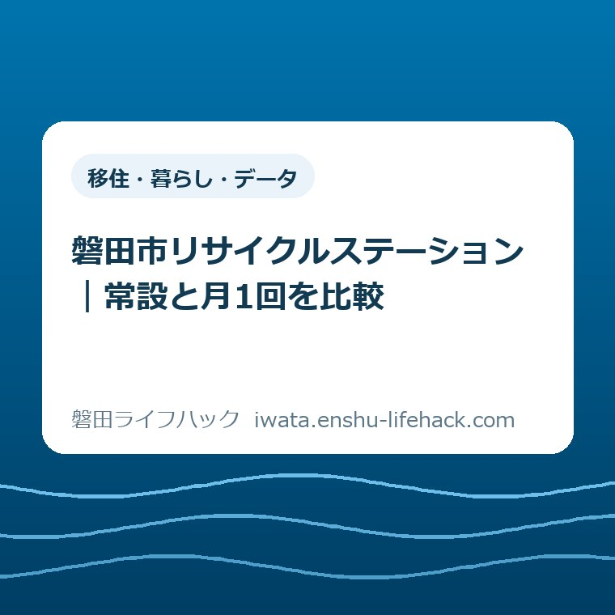
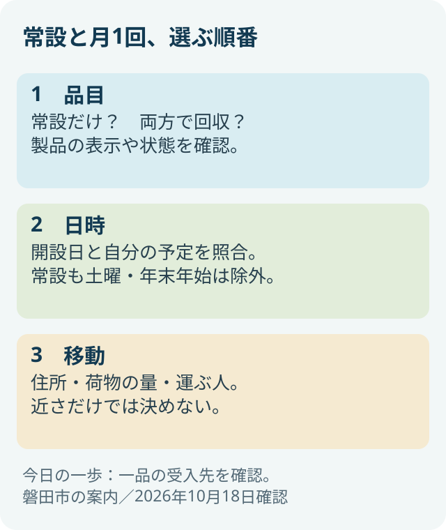
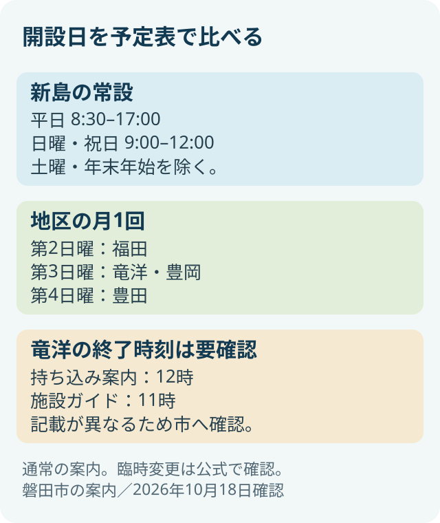

移住・暮らし・データ
磐田市リサイクルステーション｜常設と月1回を比較

この記事の要点
Q. 常設と月1回、どちらへ持っていけばいい？
A. 受入可否は品物の種類と状態で変わります。新島の常設は開設日と回収品目が多く、地区の月1回は日程が合うかが分かれ目です。先に品目、次に日時、最後に移動で比べます。竜洋の終了時刻は市の2ページで異なるため、市へ確認してください。
分別した後にも、運ぶ仕事が残っている
磐田市の資源ごみを出す先は、品物の種類や状態、利用できる曜日によって変わります。袋を分け、容器を洗い、家の中に置き場所を作る。そこまで済ませても、回収の朝に仕事が重なれば運び出せません。家族の誰かが、その時間の調整まで引き受けているのだと思います。
磐田市は、勤務などで決められた時間にごみを出せない人へ、常設と地区ごとの月1回のリサイクルステーションを案内しています。この記事は、分別の全手順を並べるものではありません。すでに分けた資源を、暮らしの予定に合う場所へ運ぶための比較です。
環境省の「3R推進月間について」では、2002年から毎年10月を3R推進月間としています。2026年10月18日の今日は、家での分別を増やすことだけでなく、出すまでの手間を見直す機会にしたいと思います。同ページの個別キャンペーンは2025年の記載なので、今年の催しとしては扱いません。
比較の順番は、品目、日時、移動です。近い場所が先に目に入っても、受け入れない物なら持ち帰ることになります。逆に、扱う品目が多い場所でも、家族が動ける時間と重ならなければ、その日の選択肢にはなりません。
常設と月1回は、三つの軸で比べる
常設と月1回の違いは、開設の頻度だけではありません。市の「リサイクルステーションへのごみの持ち込み」は、回収品目の表も分けています。以下は2026年10月18日に確認した案内から、選ぶための軸を抜き出したものです。
| 比べる軸 | 常設 | 地区の月1回 |
|---|---|---|
| 場所 | 新島252-2 | 福田・竜洋・豊岡・豊田の各会場 |
| 開設日 | 平日と日曜・祝日。土曜・年末年始を除く | 地区別に定めた日曜 |
| 品目 | 共通品目に加え、常設だけの回収品目がある | 月1回の回収品目表に載る物 |
| 選ぶ目安 | 常設だけの品物がある、または日程を合わせやすい | 対象品目が合い、地域の開設日に運べる |
新島の常設は、月曜から金曜が8時30分から17時、日曜と祝日が9時から12時と案内されています。土曜と年末年始は除かれます。「常設」という名前でも、毎日いつでも持ち込める施設ではありません。特に土曜休みの家族は、名前だけで判断しないようにしたいところです。
地区の月1回は、日程が生活に合えば候補になります。ただし、地域に会場があることと、自宅から短時間で行けることは別です。住所で位置を確認し、誰が運ぶかまで考えて初めて、実際の選択肢になります。
私は、常設を上位、月1回を簡易版という並べ方にはしません。対象品目だけを近くで出せるなら、月1回の仕組みが合う家庭もあるはずです。家庭ごとの正解は、集めた量や車の有無、休める曜日で変わります。

歯ブラシや羽毛布団は、同じようには出せない
常設だけで回収する品物があることは、名前からは気づきにくい違いです。市の品目表では、歯ブラシや羽毛布団などが常設のみとされています。日程が合うからといって、同じ荷物をそのまま地区の会場へ運べるわけではありません。
常設だけの回収品目には、インクカートリッジ、パソコン等、スマートフォン等、なべ等、ガラス、陶器、使用済みペンも挙がっています。ただし、この一覧は何でも受け入れるという意味ではありません。品目ごとの除外条件まで一組で読む必要があります。
例えば、歯ブラシの欄では電動と歯間ブラシを除きます。羽毛布団はダウン率50％以上に限るという条件があります。家にある物の呼び名が似ていても、製品の種類や表示が違えば扱いが変わるため、品物そのものと表の注意事項を見比べます。
布団を出す場合、私は先に品質表示を見ます。古着等の欄に書かれた布団の除外と、常設で条件付き回収する羽毛布団は、別の記載だからです。「布団だから全部だめ」「羽毛と呼んでいるから全部よい」とは読めません。表示が読めない場合は、受入可否を自分で決めないほうが確実です。
空き缶、空きびん、ペットボトル、古紙などは、常設と月1回の両方の表に載っています。それでも、持っていく前の準備は省けません。市の注意事項に沿って整えたうえで、会場を選ぶという順序になります。
プラスチックの対象判断は、回収先の比較とは分けておくと整理できます。材質や寸法で迷ったときは、磐田市のプラマークなし資源化と対象条件を参照してください。この記事では、対象と確認できた物をどこへ運ぶかに焦点を絞ります。
月1回の会場は、同じ日曜日ではない
地区のリサイクルステーションは、福田が第2日曜、竜洋と豊岡が第3日曜、豊田が第4日曜です。市の持ち込み案内にある会場名と住所を、日程と一緒に確認します。地区名だけで記憶していると、別の施設へ向かうおそれがあります。
| 地域・日程 | 会場・住所 | 時間の記載 |
|---|---|---|
| 福田・第2日曜 | 福田交番西向かい 福田2483 | 9～12時 |
| 竜洋・第3日曜 | 竜洋古紙ストックヤード 平間1613-1 | 終了時刻に不一致あり。下記参照 |
| 豊岡・第3日曜 | 豊岡支所南側駐車場 下野部57-1 | 9～12時 |
| 豊田・第4日曜 | 磐田市防災備蓄ステーション（旧豊田支所）北側駐車場 森岡150 | 9～12時 |
予定表へ書くなら、「資源ごみ」だけより、会場名と第何日曜かを一緒に残すほうが取り違えを減らせます。住所も共有すれば、分別した人とは別の家族が運ぶとき、行き先を最初から調べ直さずに済みます。
月1回に合わせられない月があっても、分別を続けられていないと責める必要はないと思います。開設日が固定されている以上、仕事や家族の予定と重なることはあります。常設の受入日時を並べておく意味は、そうした月の選択肢を持つことです。
ここに載せたのは通常の案内です。当日の臨時変更や混雑を確認した情報ではありません。開催を現地で確認したとも書きません。出発前には市の公式ページに更新や案内がないかを見て、判断できない点は担当窓口へ確かめてください。

竜洋の終了時刻は、公式の二つの記載が異なる
竜洋古紙ストックヤードの終了時刻は、2026年10月18日の確認では一つに決められませんでした。市の持ち込み案内は第3日曜9～12時、施設ガイドは第3日曜9～11時です。どちらも更新日が2026年4月24日となっています。
住所は両ページとも平間1613-1です。施設ガイドから持ち込み案内へのリンクもありますが、終了時刻が異なる理由は、その記載だけでは分かりません。新しいページらしく見えるほうを選んで、12時まで受け入れると断定することはできません。
私は、この1時間を小さな誤差として流したくありません。洗った容器や束ねた紙を積み、家族の予定を調整して出かける人にとっては、持ち帰りになるかもしれない差だからです。公式情報の不一致は、利用者が推測で埋める負担にしないでほしいと考えます。
竜洋を選ぶ場合は、市のごみ資源循環課へ、利用予定日と「月1回のリサイクルステーションの終了時刻」を伝えて確認してください。公式ページにある電話は0538-37-4812、担当課の受付時間は8時30分～17時15分です。担当課の受付時間と、会場の受入時間は別なので、混同しないようにします。
この記事では、市へ電話して回答を得たとは書きません。確認済みなのは、公開されている二つの記載です。電話がつながる日時や当日の対応も未確認です。答えを確かめられない場合に、午前中なら必ず大丈夫と保証することもできません。
家族の予定を置くと、選び方が変わる
常設と月1回を比べるときは、家庭の一週間を具体的に置いてみると判断しやすくなります。ここから挙げるのは実際の相談例ではなく、私が考える比較の例です。距離や所要時間、費用の実測値を示すものでもありません。
例えば、平日に動けず、日曜の朝に家族で買い物をする家庭を考えます。対象品目が月1回の表に載り、地区の開設日と合うなら、その会場が候補です。一方、今月の指定日が仕事なら、常設の日曜の受入時間と予定が重なるかを見ます。
平日の用事に合わせて運べる人は、常設の平日枠も比較できます。ただし、荷物を載せたまま長く走ることがよいとは限りません。買い物や送迎の経路と一緒に、積み下ろしを無理なくできるかを考える、という意味です。
常設だけの品物と、両方で回収する品物が混在している家庭もあります。この場合は、常設に一度で運ぶ案と、地区の開設日に分けて運ぶ案を比べます。一度で済むことだけでなく、持ち上げる量や家族の都合も、判断の材料になります。
車が使えない家庭について、近い会場なら徒歩で運べると簡単には言えません。量や重さ、道路の状況は家庭ごとに違います。住所で候補を見つけた後に、運べる量に分けられるか、家族と日程を合わせられるかを考える順序になります。
粗大ごみが混ざっている場合は、資源回収の比較だけでは行き先を決められません。磐田市の粗大ごみの戸別収集と持ち込みで、別の処理経路を確認してください。家の片付けで一緒に出てきた物でも、同じ施設へまとめて運べるとは限りません。
良い点――回収の朝に間に合わない人にも選択肢がある
常設と月1回を併設する良い点は、地域の回収時刻だけに家庭の生活を合わせなくてよいことです。市の案内が勤務などの都合に触れていることにも意味があります。時間が合わない事情を、利用者の怠慢として扱っていないからです。
地区ごとの会場が示されていることは、自宅や日常の移動先との位置関係を考える助けになります。全員が同じ会場へ行く必要がない仕組みは、家族の予定を組む材料を増やします。どの家庭でも移動が短くなるとは言えませんが、比較する入口はあります。
常設に追加の回収品目がある点も、家の中で行き先を決めにくい物を整理する助けになります。条件が一覧で示されているので、手元の製品を確認する作業につなげられます。回収先だけでなく、受け入れる範囲を示すことにも実用的な価値があります。
注文したい点――違いが一目で分かる案内がほしい
常設と月1回の案内に私が注文したいのは、両者の違いと例外を最初の画面でつかめることです。読み手は行政の分類を覚えるためではなく、今日の荷物をどこへ運ぶかを決めるためにページを開いています。
常設だけの品物を見落とすと、会場まで行ってから判断をやり直すことになります。「常設のみ」という情報を、品目のそばと比較表の両方で確認できれば助かります。これは職員個人への注文ではなく、利用者が見比べる回数を減らす案内への要望です。
竜洋の時刻の不一致については、正しい終了時刻をそろえて表示してほしいと思います。どちらも同じ更新日なので、利用者が日付だけで選ぶこともできません。確認先があることは助かりますが、毎回問い合わせる手間を市民へ残さない形を望みます。
対案・結論――今日は一品だけ、受入先を確かめる
常設と月1回を選ぶ今日の一歩は、出したい品物を一つだけ決め、市の品目表で受入先を確かめることです。家中の物を一度に仕分け直す必要はありません。「この一品はどちらで扱うか」が分かれば、その後の日程選びが具体的になります。
確認するときは、品物の名前だけでなく、素材や製品表示など、表の注意事項と照合できる情報を手元に置きます。常設だけの対象なら新島の受入日時へ進む。両方に載るなら、地区の開設日と自分の予定を並べる。この順番を家族と共有します。
メモは「品物／候補の会場／利用予定日／まだ確認していない条件」の四つで十分だと私は考えます。調べた人だけが答えを覚える形にせず、運ぶ人にも分かる形に残すためです。未確認欄があれば、次に何を聞くかも見えます。
土曜日を候補にしていた家庭は、常設の除外日に注意してください。クリーンセンターも別施設です。磐田市クリーンセンターの家庭ごみ受付日を併せて確認し、施設名と扱うごみを取り違えないようにします。
大石の視点――分けた後の運び方まで含めて考える
私、大石浩之（磐田市／不動産業）は、分別を続ける仕組みは、運び終えるところまで含めて考えるものだと思っています。袋の中身が正しくても、誰も運べない曜日だけを前提にすると、家の中に保管する役割が一人へ寄ってしまいます。
私にも迷いがあります。一度で多くの種類を運べる常設を勧めたくなりますが、それで移動の負担が大きくなる家庭もあるはずです。本人の予定や運べる量を聞かず、便利な施設を一つに決めることはできません。だから、品目から始める比較にしています。
この記事には、利用者の相談や現地訪問を実話として入れていません。公開資料で確認した事実と、私の段取りに関する考えを分けて書きました。確認が一つ進み、家族の間で運ぶ役割を話せるようになれば、今日の作業として十分だと考えます。
よくある質問
常設なら土曜日も持ち込めますか？
市の案内では、新島の常設は土曜と年末年始を除きます。平日は8時30分～17時、日曜・祝日は9～12時です。「常設」は毎日開いているという意味ではありません。土曜に車を使える場合でも、そのまま出発せず、別の日に運べるかを考え、市の最新案内で受入日時を確認してください。
羽毛布団は月1回の会場でも回収しますか？
市の持ち込み案内では、羽毛布団は常設のみの回収品目で、ダウン率50％以上に限られます。古着等の欄では布団を除外しているため、布団全般を回収する仕組みではありません。品質表示を確認し、条件を判断できなければ市へ問い合わせてください。名称だけで地区の会場へ持ち込まないようにします。
竜洋古紙ストックヤードは何時までですか？
2026年10月18日の確認では、市の持ち込み案内は第3日曜9～12時、施設ガイドは同日9～11時と記載されています。両ページの更新日は2026年4月24日で、この記事では終了時刻を断定できません。利用予定日を伝え、市のごみ資源循環課へ確認してください。窓口の受付時間と会場の受入時間も区別します。
受入条件や日時は、品物の状態、施設の運用変更などで変わることがあります。出発前の最終確認には、末尾に掲げる磐田市公式ページをご利用ください。公式ページ間で判断がつかない点は、市の担当窓口に確認してください。
参考にした公式情報
- リサイクルステーションへのごみの持ち込み／磐田市（2026年10月18日確認）
- 施設ガイド 竜洋古紙ストックヤード／磐田市（2026年10月18日確認）
- 3R推進月間について／環境省（2026年10月18日確認）
最終確認日：2026-10-18 ／ 本記事は公表情報と執筆者の見解を分けて記載しています。制度・数値・公開状況は変更される場合があるため、最新情報は磐田市公式ページでご確認ください。